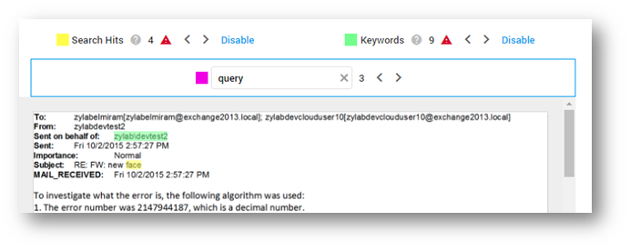

Note: When the cursor is still in the search box (opened with Ctrl + F), use ENTER or SHIFT+ENTER to jump between hits.
Function | Shortcut Key | Remarks |
|---|---|---|
|
Open a document in a (new) connected tab
| Alt + click on document | Refer to Connected Tabs/Windows |
| Open a document in a (new) connected window | Shift + Alt + click on document | Refer to Connected Tabs/Windows |
| Open a document in a new tab | Ctrl + click on document | keep the document list (is current tab) active |
| Open a document in a new tab | Ctrl + Shift + click on document | navigate to the new tab |
| Open a document in a new window | Shift + click on document | navigate to new window |
| Select Next/Previous document in the list | Up/Down Arrow Keys |
Function | Shortcut Key | Remarks |
|---|---|---|
| Next Document | F | |
| Previous Document | S | |
| Next Page | D | You can also use the Page Down button |
| Previous Page | E | You can also use the Page Up button |
| Search within opened document | CTRL + F | When in the search box, jump to next hit with ENTER. Jump to previous hit with SHIFT + ENTER. |
| Next Hit | X | Use the X and Z shortcut keys in all three hit navigators. See screenshot below. |
| Previous Hit | Z | |
| Apply a Tag | SHIFT + <letter> | <letter> is tag specific. Default letters: F ( Responsive), D (Not Responsive), S (Simple), F (Privileged), C (Confidential) |
| Hide/Show all panels |
' (US keyboard)
~ (EMEA keyboard) | |
| Redact | R | enable/disable |
| Quick Redact | Q | enable/disable |
| Quick Redact Page | P | enable/disable |
| Redact Pages | L | enable/disable |
| Redact Document | O | enable/disable |
| Annotate | A | enable/disable |
| Delete (Quick) Redaction/Annotation | Delete | Select when Redact/Annotate mode is disabled, then press Delete |
| Exit (Quick) Redact/Annotation mode | Esc | |
| Tag current document like the previous document | T | |
| Media View - Next Hit | X | For all search hit navigators (see below) |
| Media View - Previous Hit | Z | For all search hit navigators (see below) |

Use the shortcuts X and Z to navigate between hits in all three search hit navigators displayed above (Search Hits for Keyword Search, Keywords for Keyword Highlighting and Search within document (Ctrl+F)). The active navigator has a blue outline.
|
|
Note: When the cursor is still in the search box (opened with Ctrl + F), use ENTER or SHIFT+ENTER to jump between hits. |